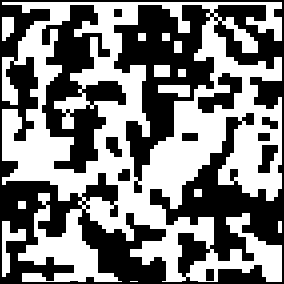

4. Cellular Automata and Fractal Evolution
Two-Dimensional CA Examples
From a random initial distribution of live and dead cells, this von Neumann CA (do you see why it is called
majority rules
?) freezes completely, except for some oscillating checkerboard regions.

Return to
2D CA Examples
.